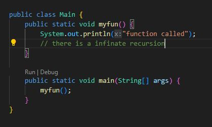
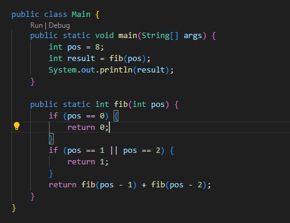

Day 1 ==> Recursion and memoization
Recursion
In simple words The function calling if self is called recursion.If recursion is not used corretly it may leed to infinite recursion, which means it does not stop calling itself.
Why Recursion uses of recursion
I shall explain recursion with two examples by take Factorial of numbers and fibonachii series.Iterating loops for values are more spaces and takes time to reduce those we use recursion.
Factorial of numbers
The explanation folows in the Main class an inter 12 assigned to vaiable num and the result is declared as a initial value zero and calls the fact() function to the factorial of given number. Fuction calls itself for the (num-1)th term. The basic logic in the code is 5!=>5*4!=>5*4*3!.The output of the code is 479001600
Fibonachii series
Let's talk about the logic in here fibonachii numbers are the addition of last 2 numbers of the series.here after every recursion the new value of c becomes b and b becomes a ,so that the next fibonachii number is a+b for exaple fibonachii of 8 is fibonachii of 7 + fibonachii of 6 which equals 21.
